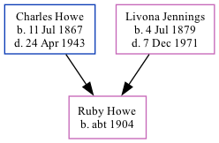

Ruby M Howe c1904 -
[ Home ] | [ Calendar ] | [ Surnames Index ] | [ Family History ]The child of Charles Howe and Livona Jennings, Ruby Howe, the fourth cousin twice-removed on the mother's side of <a href="I1.html">Nigel Horne</a>, was born in Missouri, USA <i>c.</i> 1904. On Jan 1, 1920, she lived in Gentry, Missouri<span class="citation">1</span>.
Parents
- Charles Benjamin was born on Jul 11, 1867
- Livona was born on Jul 4, 1879
Citations
- US Census 1920 - Findmypast (was age 16 and the daughter of the head of the household)
Media
1910 US Census Transcription - USC-1910-004972619-00519-033
1920 US Census Transcription - USC-1920-004966297-00807-098
Family Tree
Generated by Ged2Site. Last updated on Jul 20, 2025